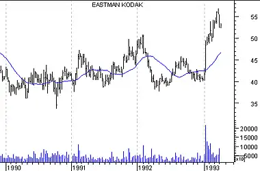
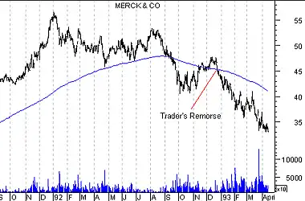
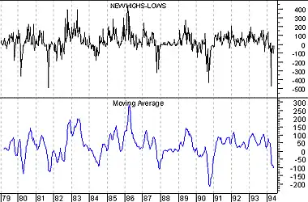

Introduction - Moving Averages
Moving Averages
Moving averages are one of the oldest and most popular technical analysis tools. This chapter describes the basic calculation and interpretation of moving averages. Click here for Full details on moving averages.
A moving average is the average price of a security at a given time. When calculating a moving average, you specify the time span to calculate the average price (e.g., 25 days).
A "simple" moving average is calculated by adding the security's prices for the most recent "n" time periods and then dividing by "n." For example, adding the closing prices of a security for most recent 25 days and then dividing by 25. The result is the security's average price over the last 25 days. This calculation is done for each period in the chart.
Note that a moving average cannot be calculated until you have "n" time periods of data. For example, you cannot display a 25-day moving average until the 25th day in a chart.
Figure 23 shows a 25-day simple moving average of the closing price of Caterpillar.
Figure 23

Since the moving average in this chart is the average price of the security over the last 25 days, it represents the consensus of investor expectations over the last 25 days. If the security's price is above its moving average, it means that investor's current expectations (i.e., the current price) are higher than their average expectations over the last 25 days, and that investors are becoming increasingly bullish on the security. Conversely, if today's price is below its moving average, it shows that current expectations are below average expectations over the last 25 days.
The classic interpretation of a moving average is to use it to observe changes in prices. Investors typically buy when a security's price rises above its moving average and sell when the price falls below its moving average.
Time periods in moving averages "Buy" arrows were drawn on the chart in Figure 24 when Aflac's price rose above its 200-day moving average; "sell" arrows were drawn when Aflac's price fell below its 200-day moving average. (To simplify the chart, I did not label the brief periods where Aflac crossed its moving average for only a few days.)Figure 24

Long-term trends are often isolated using a 200-day moving average. You can also use computer software to automatically determine the optimum number of time periods. Ignoring commissions, higher profits are usually found using shorter moving averages.
MeritsThe merit of this type of moving average system (i.e., buying and selling when prices penetrate their moving average) is that you will always be on the "right" side of the market--prices cannot rise very much without the price rising above its average price. The disadvantage is that you will always buy and sell late. If the trend doesn't last for a significant period of time, typically twice the length of the moving average, you'll lose money. This is illustrated in Figure 25.
Figure 25
Traders' remorse
Moving averages often demonstrate traders' remorse. As shown in Figure 26, it is very common for a security to penetrate its long-term moving average, and then return to its average before continuing on its way.Figure 26
You can also use moving averages to smooth erratic data. The charts in Figure 27 show the 13 year history of the number of stocks making new highs (upper chart) and a 10-week moving average of this value (lower chart). Note how the moving average makes it easier to view the true trend of the data.
Figure 27
